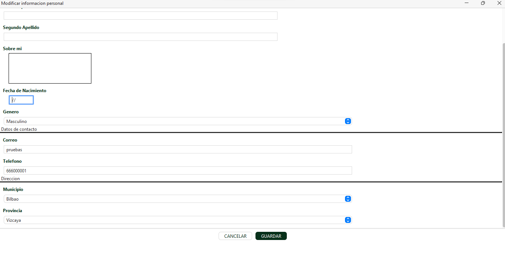

Login
This section is the gateway to your professional profile. To guarantee the security of your information and personalize your experience, it is necessary to identify yourself in our system.

Welcome to the complete guide for using our application. Here you will find detailed explanations and answers to frequently asked questions.
Download ApplicationThis section is the gateway to your professional profile. To guarantee the security of your information and personalize your experience, it is necessary to identify yourself in our system.
Within your profile settings, you have the option to modify your access password at any time. This function is ideal if you want to update your security or simply change your current password to one that is easier to remember.

To guarantee the security and accessibility of your professional profile, the system allows you to update your password from settings if you know the current one; however, if you have completely forgotten your credentials, you must complete a Google form to verify your identity. This allows the administrator to validate your request, perform the internal change, and send you the new access credentials by email so you can resume your activity immediately.

This section constitutes the core of your identity within the platform. It is the space where your fundamental data is centralized, allowing both the system and recruiters to have a direct and professional way to communicate with you.


This section is dedicated to building your professional timeline. It is the space where you can highlight the roles performed and the achievements reached in each of the positions you have held throughout your career, allowing recruiters to understand your potential and practical experience.


This section is intended to certify your knowledge base and technical preparation. It is the place where all your educational milestones are officially recorded, from university degrees or vocational training to specialized certifications, providing the necessary academic support for your applications.


In a globalized labor market, this section is fundamental to demonstrate your communication skills in different environments and cultures. Here you can detail your language skills, specifying your proficiency level in both written and spoken language so that companies can identify your international potential.

Use advanced search tools to find job offers that match your profile. Filter by sector, location, contract type, salary, and required experience. Save your searches to receive automatic notifications when new matching offers are published.


Choose the version compatible with your operating system and start using the job board application today.
Version 2.5.0
Version 2.5.0
Version 2.5.0
Download the installer compatible with your operating system from the Download section. Run the file and follow the on-screen instructions.
The application requires Windows 10 or higher, macOS 10.15 or higher, or a modern Linux distribution.
After logging in, click 'Edit' and complete all fields: work experience, academic background, skills, and save.
Select the skills you are looking for, and the profiles will automatically load along with their resumes.
After logging in, click "Create User" and complete all required fields.
Yes, we offer technical support via email at soporte@zabalburu.com.